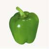

-
 Chard Spring 1 × $940.00
Chard Spring 1 × $940.00 -
 Broccoli Cauliflower 1 × $899.00
Broccoli Cauliflower 1 × $899.00 - Bell Pepper 1 × $756.00
-
 Fresh Eggplant 1 × $723.00
Fresh Eggplant 1 × $723.00 -
 Carrots Vegetables 1 × $1080.00
Carrots Vegetables 1 × $1080.00
Subtotal: $4398.00
Chard Spring 1 × $940.00Broccoli Cauliflower 1 × $899.00Fresh Eggplant 1 × $723.00Carrots Vegetables 1 × $1080.00Subtotal: $4398.00
It implies that the methods and techniques employed in farming directly influence the quality of the food that is eventually harvested. Farmers who adopt sustainable, ethical, and environmentally friendly practices are more likely to produce food that is healthier and of higher quality.
Customer :
Date :
Category :
Project Value :
Atural fruit farming can be more labor-intensive and may yield lower crop yields compared to conventional farming. Additionally, natural and organic fruits can be more expensive due to the increased costs associated with organic certification and sustainable farming practices. In summary, natural fruits are fruits that are grown in a manner that prioritizes environmental sustainability, human health, and the preservation of natural ecosystems. They offer consumers a choice to support farming methods that align with their values and preferences.
Organic farming prohibits the use of synthetic pesticides, herbicides, and fertilizers. Instead, it relies on natural alternatives, such as compost, cover crops, and beneficial insects, to maintain soil fertility and control pests
Aenean tristique viverra leo eu vehicula. Nam in viverra lacus. Donec sed nunc velit. Donec dignissim risus et tristique mollis. Vestibulum faucibus, purus vel ultricies tristique, quam mi pretium velit, et ultrices tellus magna a augue. Nunc vel felis eget lacus mattis elementum. Praesent lacinia faucibus massa, sed sagittis nisi dignissim et. Fusce ut porttitor enim. Aliquam non lobortis nibh.
Proin auctor, quam sit amet placerat eleifend, neque sem maximus libero, at vulputate urna libero in lorem. In felis tortor, varius in felis nec, condimentum Pulvinar mi. Cras tempor sapien sit amet lectus ultricies volutpat. Nulla vel porta sapien. Nam a fringilla nisl
Environmental Sustainability: Natural fruit farming practices aim to minimize environmental impact. This includes practices like crop rotation, reduced tillage, and the promotion of
No Artificial Additives: Fresh fruit farming practices aim to minimize environmental impact. This includes practices like crop rotation, reduced tillage, and the promotion